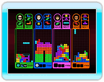
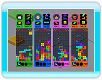

Dies wird mit normalen Tetrisregeln gespielt.
Trete gegen Rivalen oder Computergegner an und löse Linien auf, während du versuchst sie zum Game Over zu zwingen. Wer dies als erstes schafft, ist der Sieger. Die Anzahl der Linien die du auflöst, bestimmt die Zahl der Strafblöcke, die du in das gegnerische Feld schickst.
Die Standardregeln sind genauso wie beim „Feldsteiger“. Du gewinnst wenn du als erstes das Ziel erreichst oder dein Gegner das Rennen nicht mehr fortsetzen kann. Jeder Spieler erhält einen „Linienkick“, wenn er einen Checkpunkt passiert.

Löse die Linien, die in grün markiert sind, auf. Wenn du einen Tetrimino auf der Linie auflöst, verschwindet die grüne Linie dahinter. Du gewinnst, wenn du als erster alle Linien auflöst oder dein Gegner nicht mehr weiterspielen kann. Wenn du in einem Team spielst, lösen sich die grünen Linien bei dir auch auf, wenn dein Partner sie auflöst.

Die Standardregeln sind dieselben, wie beim
„Schatten“. Der Gewinner ist
der Spieler mit der höchsten
Fertigstellungsrate am Ende
des Spieles oder ein Spieler
der es schafft 100% Fertigstellungsrate zu erreichen.

Die Standardregeln sind dieselben, wie beim „Levelrenner“. Du gewinnst
entweder wenn du als erster
im Ziel ankommst oder wenn dein Gegner nicht mehr weiterspielen kann.

Ein Zweispielermodus bei dem die Spieler zusammenarbeiten, um Linien auf einem Feld aufzulösen, das doppelt so breit ist, wie normalerweise
(20 Blöcke breit). Die Tetriminos sind abwechselnd für S1 und S2. Es gelten jedoch die normalen
Tetrisregeln. „Halten“ wird von beiden Spielern geteilt.

Ein Zweispielerwettkampf auf einem Feld, dass doppelt so breit ist, wie normalerweise (20 Blöcke breit). Die Regeln sind deutlich anders, als beim normalen Tetris, da die Spieler darum kämpfen, möglichst viel Fläche mit ihren Tetriminos einzuschließen (die Tetriminos selbst zählen als
Fläche). Abwechselnd kontrollieren die Spieler einen Tetrimino. Der Spieler, der eine Fläche zu Ende abschließt, bekommt die Fläche. Wer am Ende des Spieles mehr Fläche insgesamt hat, gewinnt.